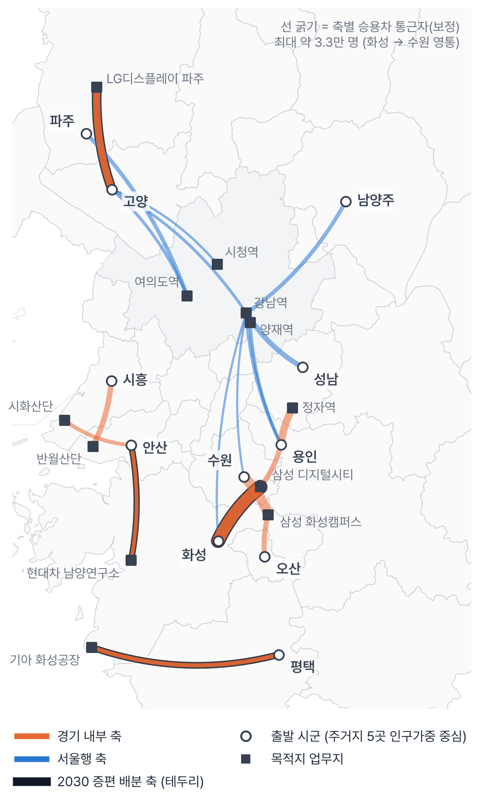
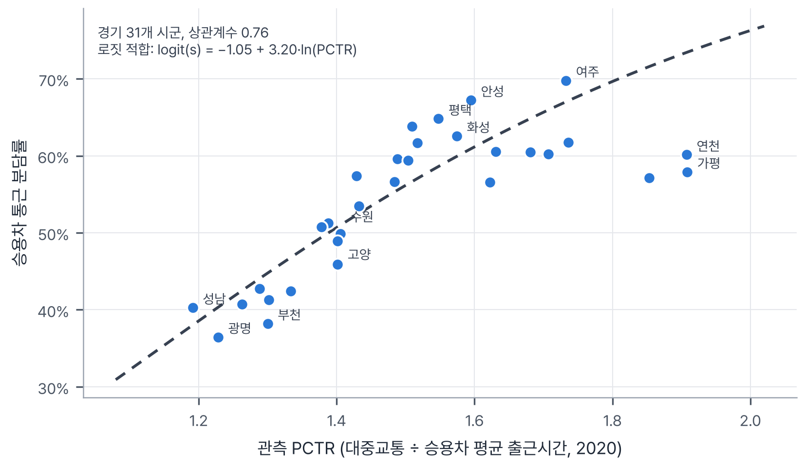
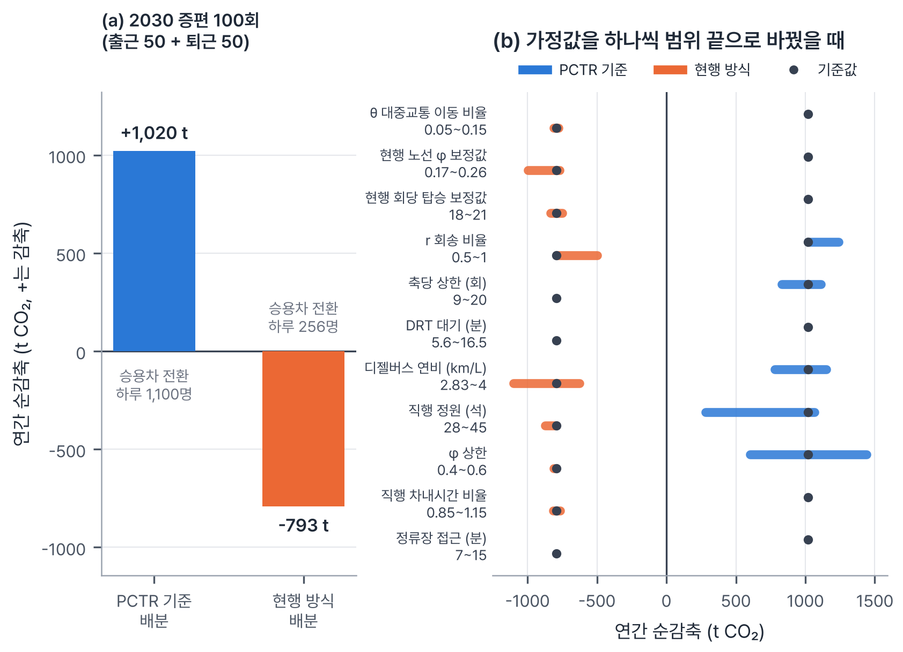
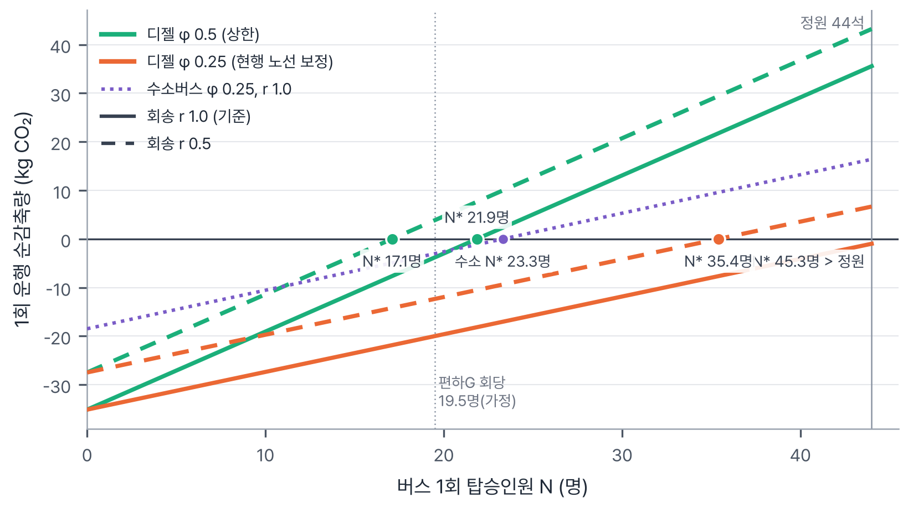
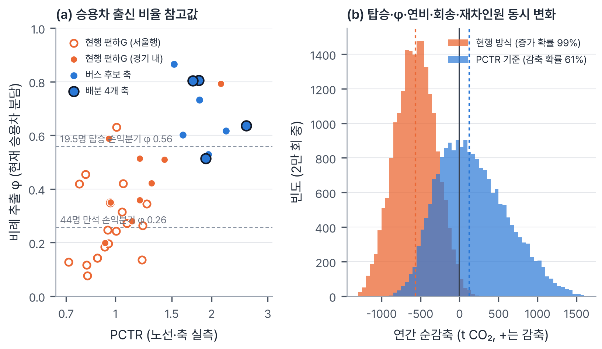

및 목적
문제 상황. 경기도 통근자의 상당수는 혼자 승용차를 몰고 시군 경계를 넘는다. 경기→서울 통근의 승용차 분담은 55%이고, 도내 시군 간 통근에서는 대중교통이 승용차보다 평균 2.1배 오래 걸린다(경기연구원). 혼잡과 배출을 함께 줄이려면 승용차 통행량 자체를 줄여야 한다.
현행 대응의 한계와 분석 필요성. 경기도는 좌석·예약형 출퇴근 버스인 편하G버스를 하루 84회(2026)에서 184회(2030)로 늘릴 계획이다. 노선은 도민 제안(1,503건)과 시군 수요조사로 정해져 현행 28개 노선 대부분이 서울행이다. 서울행은 전철이 이미 빠른 축이라 승객이 승용차가 아니라 대중교통에서 옮겨 왔을 수 있고, 그러면 빈 차 회송까지 더해져 탄소가 오히려 늘어난다.
목적. 기존 서비스(편하G·똑버스)를 어느 축에, 어떤 방식으로, 몇 회 넣을지 정하는 배치 기준을 수요(축별 승용차 통근자), 원인(PCTR·도보 비중), 탄소(버스 1회의 손익분기 탑승인원 \(N^*\))로 만든다. 2030년 증편분 100회(출근 50 + 퇴근 50)를 이 기준과 현행 방식으로 배분해 비교하고, 탄소 결과가 회당 탑승과 그중 승용차 출신 비율 \(\varphi\)에 좌우되므로 결론을 회당 승용차 출신 승객 수라는 조건과 함께 제시한다.
| 활용 데이터(명) | 제공기관(명) | 출처 플랫폼(명) | URL | 선정 이유 |
|---|---|---|---|---|
| 직장 거주지 이동 데이터 (2025-12) | 국민연금공단 | 공공데이터포털 | https://www.data.go.kr/data/15167424/fileData.do | 시군구 통근 OD |
| 소요시간별·이용교통수단별 통근통학인구 (2020) | 통계청 | KOSIS | https://kosis.kr/statHtml/statHtml.do?orgId=101&tblId=DT_1PA2004 | 시군별 수단 분담·통근시간 |
| 행정동별 주민등록 인구 (2026-09) | 행정안전부 | 주민등록 인구통계 | https://jumin.mois.go.kr/ | 주거 밀집 행정동 선정 |
| 행정동 경계 (2026-07) | 행정안전부 기반 | GitHub(vuski) | https://github.com/vuski/admdongkor | 동 경계·대표점 |
| 주거 건물 면적·층수 | OpenStreetMap | Overpass API | https://overpass-api.de/ | 실제 주거지 대표점 |
| 경기 편하G버스 노선·편성 | 경기도 | 경기도청 누리집 | https://www.gg.go.kr/cont/easy_gbus/ | 현행 28개 노선 운행 횟수 |
| 승용차 출근 통행시간 (평일 08:00 출발) | 카카오모빌리티 | 미래 운행 정보 길찾기 API | https://developers.kakaomobility.com/ | 127쌍 출근 피크 시간 |
| 대중교통 통행시간·도보·환승 | 카카오 | 카카오맵 길찾기 웹 | https://map.kakao.com/ | 127쌍 + 재측정 23쌍 |
| 차량 제원·공인연비 (유니버스·수소전기·쏠라티·쏘나타) | 현대자동차, 한국에너지공단 | 카탈로그·가격표, 표시연비 검색 | https://www.hyundai.com/ , https://min24.energy.or.kr/ | 탄소 모델 입력 |
| 대중교통 경로 (교차검증) | ODsay | ODsay LAB API | https://lab.odsay.com/ | 29쌍 교차검증 |
대중교통 시간은 브라우저 자동화로 카카오맵 길찾기 화면의 추천 1순위 경로 요약값만 기록했고(127쌍), ODsay 29쌍과 상관계수 0.78, 시간 비 중앙값 1.02로 맞았다. 대체 목적지 20쌍의 승용차 시간은 카카오맵 웹 출근시간(10/27 08:00) 예측을 썼다.
및 방법
① 통근 축 추출
국민연금 OD에서 경기 출발·시군 경계를 넘는 통근자 1,000명 이상 축 532개(211만 명)를 뽑고, 출발 시군의 30분 이상 통근자 승용차 비율로 승용차 통근자를 1차 추정해 상위 20개 축을 분석했다.
② PCTR 측정: 주거 밀집지 5곳의 인구가중 평균
PCTR은 대중교통 시간(카카오맵 추천 1순위)을 승용차 시간(카카오모빌리티 API, 평일 08:00 출발 예측)으로 나눈 값이다. 한 지점에서 재면 출발점에 따라 값이 크게 달라지므로, 시군마다 주민등록 인구 상위 5개 행정동(11개 시, 55곳)을 고르고 동 안의 출발점은 OSM 주거 건물을 바닥면적×층수(미표기 시 아파트 15층 등)로 가중해 가중 거리 합이 가장 작은 실제 건물로 정했다. 목적지는 축마다 대표 업무지 한 곳이고, 현행 편하G 28개 노선도 기·종점 사이를 같은 방식으로 쟀다.
③ 축 단위 승용차 선택 모형
경기 31개 시군의 관측 PCTR과 승용차 분담률(인구총조사)을 통근자 가중 로짓 회귀로 적합했다(상관계수 0.76, \(\beta=3.20\), 그림6). 시군 상수 \(\alpha_o\)는 축별 승용차 통근자 합이 30분 이상 통근자 승용차 분담률 \(s_{car,30}(o)\)와 맞도록 보정했다.
④ 원인 진단 분류
위 조건부터 판정한다. 승용차 통근자 3,000명 미만은 보류, PCTR 1.5 미만(대중교통이 이미 경쟁력 있음)은 수요관리, 평균 도보 20분 이상 또는 30% 이상(첫 구간이 문제)은 DRT 연계, 그 밖(차내 시간·환승이 문제)은 출퇴근 직행이다.
⑤ 탄소 손익분기 (차량 동역학 모델)
도로 부하식과 윌런스 선 연료 모델로 버스 1회와 승용차 통근 1인의 CO₂를 계산했다. 차종은 직행 유니버스 디젤 44석, 무공해 대안 유니버스 수소전기버스 45인승, DRT 쏠라티 13인승, 승용차 쏘나타 2.0이고 치수·엔진·정원은 현대 2026 공식 제원을 썼다. 효율 \(\eta\)는 연비로 역산했고(승용차 0.304, 유니버스 0.350, 쏠라티 0.339, 수소버스 0.525), 수소는 생산 배출 9.2 kgCO₂/kg까지 넣었다.
\(C_0\): 버스 1회 CO₂, \(C_{dh}\): 빈 차 회송 1회 CO₂, \(r\): 운행 1회당 회송 횟수, \(\varphi\): 승객 중 원래 승용차 통근자 비율, \(c_{car}\): 승용차 통근 1인 CO₂(재차 1.1명), \(c_{pax}\): 승객 1명당 늘어나는 버스 CO₂, \(\gamma\): 도로 경사각.
⑥ 수요 보정, 증편 배분, 민감도
- 문전 시간. 직행은 \(T_{car}\)+접근 10분(교통카드 실측 9.55분), DRT는 대중교통 시간에서 출발지 도보를 빼고 똑버스 대기 14분과 탑승시간을 더했다.
- 보정. \(\kappa\)(노선 도달 비율)와 좌석·무환승 가산시간 \(B\)를 현행 편하G 실적(2022년 연 322,133건, 하루 60~68회 → 회당 약 19.5명)과 \(\varphi=0.25\)(국내 설문 17~21.3%보다 약간 높게)에 맞춰 역산했다: \(\kappa=0.129\), \(B=10.6\)분. 새 축의 \(\varphi\)는 GTX-A 승용차 이용자 전환율 50%를 상한 대용으로 써 0.5로 제한했다.
- 배분. 도 계획 횟수는 출퇴근 합산이므로 출근 50회를 탄소를 가장 많이 줄이는 축에 1회씩 넣고(그리디, 축당 상한 15회) 퇴근 50회는 대칭 운행으로 계산했다. 현행 방식은 현 28개 노선에 현재 운행 비율대로 나눈 경우다.
- 민감도. 15개 입력(\(\beta\) 2.37~3.31 포함)을 하나씩 범위 끝으로 바꾸며 \(\kappa\)·\(B\)를 다시 보정했고, 탑승·\(\varphi\)·연비·회송·재차인원은 2만 회 몬테카를로로 동시에 흔들었다.
| 입력 | 값 (범위) | 근거 |
|---|---|---|
| 회송 \(r\) | 1.0 (0~1.0) | 차량 1대 = 출근 1회 + 퇴근 1회, 낮 공백 약 10시간(경기도 편성표) |
| 직행 차량 | 유니버스 디젤 44석, 공차 12.0 t | 현대 2026 카탈로그(440 PS). 공차는 등록증 총중량 15,140 kg과 수출형 11,975 kg으로 산정. 정원은 편하G 좌석형 최대 44인승 |
| 직행 연비 | 3.49 km/L (2.83~4.0) | 공인연비 미공개 → 한국교통연구원 경유 전세버스 값, 커뮤니티 실연비 환산 3.4~3.5와 일치 |
| 수소버스 | 28.0 km/kg, 9.2 kgCO₂/kgH₂ | 유니버스 수소전기 공식 연비(정속), 천연가스 개질 IPCC 기본값 |
| DRT 승합 | 쏠라티 13인승, 8 km/L (6~10) | 현대 2026 제원, 연비는 커뮤니티 실주행 하한. 배분에서 선택되지 않아 결과 영향 없음 |
| 승용차 | 12.6 km/L, 재차 1.1명 (1.3) | 쏘나타 2.0 공인 복합(에너지공단 DB), KTDB 국가교통조사 |
| \(\theta\) / \(\varphi\) 상한 | 0.10 (0.05~0.15) / 0.5 (0.26~0.6) | GTX-A 개통 후 동탄 광역버스 이용 8% 감소 / 국내 관측 구성비 17~26%, GTX-A 승용차 전환율 50%를 상한 대용(국토연구원 2025) |
| 접근 / DRT 대기 | 10분 / 14분 (5.6~16.5) | 수도권 출발~승차 9.55분(한국ITS학회논문지 2023), 수원 똑버스 운행기록 14.4분(수원시정연구원 2024) |
연간 운행일은 2026년 평일에서 공휴일을 뺀 245일이다.
활용
사용 서비스. Anthropic Claude (Claude 앱 에이전트 작업: 웹 검색, 브라우저 자동화, Python 코드 실행, 하위 에이전트 병렬 조사)
활용 범위. 문제의식, PCTR 기반 대상지 선정 아이디어, 분석 방향, 결과 검토는 참가자가 맡았다. Claude는 선행 정책·통계 조사, OD·KOSIS 전처리, 카카오 API·카카오맵 웹 조회 자동화, ODsay 교차검증, 행정동·OSM 대표점 계산, 손익분기·배분·민감도·몬테카를로 코드, 입력값 근거 조사, 시각화와 보고서 초안을 맡았다. 수치는 모두 코드 실행 결과이고 출처는 참고문헌에 표시했다.
주요 프롬프트 (요지).
- "승용차 절대 통행량을 줄이는 게 우선이다. PCTR이 일정 값 이상인 출퇴근 경로에 편하G·똑버스 같은 서비스를 지원하는 방향으로, 수요를 더 정확히 겨냥하는 기준을 만들자."
- "국민연금 자료에는 차량·대중교통 비율이 없으니 이 공백을 채우자." / "엔진맵 없이 탄소 손익분기 모델을 만들자."
- "출발점을 구청이 아니라 주거 밀집 지역 4~5곳으로 잡고, 목적지까지 시간 평균을 쓰자." / "추정값으로 되어 있는 것은 모두 확실한 근거를 찾아서 바꾸자."
및 결과
결과 1. 승용차 통근이 가장 많은 축은 경기 외곽끼리 오가는 길이다. [그림1] 승용차 상위 20개 축 중 10개가 경기 내부 축이고, 1위는 화성→수원 영통(약 3.3만 명)이다. 이 중 편하G가 다니는 축은 용인→서울 강남 하나다.
결과 2. 서울행은 전철이 차보다 빠르고, 경기 내부는 차가 두 배 가까이 빠르다. [그림2] 축별 PCTR 평균은 경기 내부 1.82, 서울행 0.82다. 출발점 단위로 PCTR 1.5 이상은 경기 내부 50곳 중 41곳, 서울행 0곳이고, 현행 편하G 28개 노선은 평균 1.06(1.5 이상 1개)이다. 서울행 목적지를 역 대신 업무 건물로 바꿔도 용인→강남 0.97, 고양→여의도 1.05로 1.5에 못 미친다.
결과 3. 20개 축 중 버스를 새로 넣을 축은 9개다. [그림3] 진단은 수요관리 11, DRT 연계 7, 출퇴근 직행 2이고 서울행 10개 축은 모두 수요관리다. DRT 연계 7개 축에서도 똑버스 평균 대기(14분)가 도보 절감보다 길어 역 연계 DRT는 승용차를 끌어오지 못했다(대기 임계 7.4~11.3분). 그래서 이 축들도 주거 단지 안에 정차하는 직행을 권장한다.
| 축 (목적지) | 축 길이 | PCTR (5곳 범위) | 평균 도보 | 진단 → 서비스 | DRT 대기 임계 | 출근 배분 / 연 감축 |
|---|---|---|---|---|---|---|
| 평택→화성 (기아 화성공장) | 41.2 km | 2.57 (2.24~2.77) | 29.1분 | DRT 연계 → 단지 정차 직행 | 11.3분 | 15회 / 431 t |
| 고양→파주 (LG디스플레이) | 27.0 km | 1.75 (1.18~2.20) | 25.9분 | DRT 연계 → 단지 정차 직행 | 10.0분 | 15회 / 282 t |
| 안산→화성 (현대차 남양연구소) | 22.9 km | 1.92 (1.77~2.04) | 21.2분 | DRT 연계 → 단지 정차 직행 | 8.2분 | 15회 / 239 t |
| 화성→수원 영통 (삼성 디지털시티) | 19.4 km | 1.82 (1.47~2.53) | 28.4분 | DRT 연계 → 단지 정차 직행 | 11.0분 | 5회 / 68 t |
| 시흥→안산 단원 (반월산단) | 14.2 km | 1.63 (1.45~2.15) | 14.9분 | 출퇴근 직행 | – | – |
| 안산→시흥 (시화산단) | 14.0 km | 1.95 (1.71~2.28) | 15.5분 | 출퇴근 직행 | – | – |
| 수원→화성 (삼성 화성캠퍼스) | 12.7 km | 1.83 (1.78~2.00) | 21.0분 | DRT 연계 → 단지 정차 직행 | 8.1분 | – |
| 오산→화성 (삼성 화성캠퍼스) | 10.7 km | 2.22 (1.75~3.04) | 19.1분 | DRT 연계 → 단지 정차 직행 | 7.4분 | – |
| 용인→수원 영통 (삼성 디지털시티) | 10.9 km | 1.52 (1.41~1.67) | 23.0분 | DRT 연계 → 단지 정차 직행 | 8.9분 | – |
결과 4. 손익분기는 \(\varphi\)와 회송이 정한다. [그림4] 유니버스 디젤 44석·회송 1회의 \(N^*\)는 \(\varphi\)=1.0이면 10.7명, 0.5면 21.9명, 0.25면 45.3명이라 현행 수준(\(\varphi\)=0.25)에서는 만석이어도 손익분기에 못 미친다. 회당 승용차 출신 승객(\(N\varphi\))으로 보면 손익분기는 탑승·축 길이와 거의 무관하게 약 11명이다(44명 탑승 11.3명, 20명 탑승 10.9명, 만석이면 \(\varphi^*=0.26\)). 수소버스는 \(\varphi\)=0.25에서 \(N^*\)=23.3명이다.
결과 5. 현행 방식은 탄소를 늘릴 가능성이 크고(86%), PCTR 기준은 줄일 가능성이 더 크다(61%). 전제는 회당 승용차 출신 승객 11명이다. [그림5, 그림7]
| 구분 | 배분 대상 | 회당 탑승 × \(\varphi\) | 하루 이용 | 승용차 출신 | 대중교통 출신 | 연간 순감축 |
|---|---|---|---|---|---|---|
| PCTR 기준 | 경기 내부 4개 축 | 44명 × 0.5 = 22명 | 2,200명 | 1,100명 | 1,100명 | +1,020 tCO₂ |
| 현행 방식 | 현 28개 노선에 비례 | 19.5명 × 0.25 ≈ 5명 | 1,032명 | 256명 | 777명 | −793 tCO₂ (증가) |
모형의 만석(노선당 하루 약 1,000명)은 시군 단위 \(\beta\)를 노선에 외삽한 값이라 탑승과 \(\varphi\)를 직접 정한 시나리오로 다시 계산했다(표4). 같은 탑승·\(\varphi\)를 주면 축이 긴 현행 방식(평균 39.2 km, PCTR 축 29.3 km)의 절댓값이 더 크므로, PCTR 기준의 이점은 "고PCTR 축일수록 승용차 출신 승객이 많고 더 많이 탄다"는 가설에서 나온다.
| 회당 탑승 | \(\varphi\) = 0.25 | \(\varphi\) = 0.35 | \(\varphi\) = 0.5 |
|---|---|---|---|
| 20명 | −563 / −754 | −372 / −498 | −86 / −115 |
| 30명 | −340 / −455 | −54 / −72 | +375 / +502 |
| 44명 | −28 / −38 | +391 / +524 | +1,020 / +1,367 |
가설 점검. ① 현재 통근 수단 구성대로 승객이 온다고 본 \(\varphi\) 참고값(\(\beta\) 로짓 계산이라 독립 검증은 아니다)은 배분 4개 축 0.69, 현행 노선 0.33(서울행 0.27)이다(그림7a). 실제로는 대중교통 이용자가 더 타서 이보다 낮다. ② 기준을 넘으려면 15회 축은 하루 약 170명, 축 승용차 통근자의 0.2~2.1%(합계 0.8%)가 옮기면 되지만 현행 방식은 \(\varphi\) 0.56이 필요하다. ③ 탑승(PCTR 축 20~44명, 현행 15~40명)·\(\varphi\)(0.17~0.6, 0.15~0.35)·연비·회송·재차인원을 동시에 뽑은 2만 회 계산에서 PCTR 기준의 순감축 확률은 61%(중앙값 연 124 t, 90% 구간 −471~+973 t), 현행 방식의 순증가 확률은 86%(중앙값 −388 t), PCTR 기준이 덜 배출할 확률은 87%였다(그림7b). 현행 탑승을 2022년 수준(15~25명)으로 두면 99%, 현행 \(\varphi\) 상한을 0.5로 넓히면 65%이고, 두 방식에 같은 탑승·\(\varphi\)를 주면 우위는 사라진다.
대중교통 이용자도 탄다. 승객 중 \(1-\varphi\)는 원래 대중교통 이용자라 탄소는 줄지 않지만, 서울행 현행형 노선은 하루 약 777명을 광역버스·전철에서 옮겨 출근 혼잡을 덜고(2022년 10월 광역버스 출퇴근 입석 4,802명), PCTR 축의 약 1,100명은 통근시간이 준다(평택→화성 151→69분, 안산→화성 96→60분, 화성→영통 74→51분, 고양→파주 63→46분).
및
기대효과
적용 대상. 경기도 편하G·똑버스 노선 선정 절차와 2030 증편 배분.
- 노선 선정에 'PCTR·\(N^*\) 검증 단계'를 넣는다. 후보마다 ① 주거지 5곳 인구가중 PCTR 1.5 이상, ② 개통 전 주민 설문으로 본 회당 승용차 출신 승객 11명 이상을 확인하고, 넘지 못하면 수요관리로 돌린다.
- 2030 증편분은 경기 내부 산단 축부터 시범 배치한다(적용 사례: 표2의 4개 축). 1년 운행 실적(회당 탑승, 이전 수단)으로 11명 기준을 확인한 뒤 확대한다.
- 증편 목적을 먼저 정한다. 탄소 감축이 목적이면 고PCTR 산단 축에 넣고, 서울행 축은 출근 혼잡 완화 수단으로 증편해 주차·혼잡 관리와 함께 쓴다.
- 도보가 문제인 축은 단지 내 정차 직행으로 운영한다. 역 연계 DRT는 출근 대기를 7~11분 이하로 줄일 수 있을 때만 쓴다.
- 대기업 사업장 축은 기업 통근버스와 함께 운영한다. 기아·LG디스플레이·현대차·삼성의 자체 버스가 닿지 않는 주거지·협력사 직원을 도가 맡는다.
- 데이터 개방을 요청한다. 노선별 탑승 실적과 이전 수단 설문을 공개하면 11명 기준 충족 여부를 확인하고 \(\varphi\)·\(\kappa\)를 노선 단위로 다시 보정할 수 있다.
기대효과와 파급효과.
- 개통 전 판정 기준(회당 승용차 출신 승객 11명)으로 순증가 확률 86%인 기준 미달 증편(현행 방식 중앙값 연 약 390 t 증가)을 걸러낸다.
- 산단 축은 순감축 확률 61%(중앙값 연 약 120 t)이고, 모형 기준값(회당 44명, \(\varphi\) 0.5)이면 연 약 1,020 t 감축과 하루 최대 약 1,100명의 승용차 통근 전환을 기대한다.
- 대중교통 이용자도 서울행은 출근 혼잡 완화(하루 약 780명), 산단 축은 통근시간 단축(약 1,100명)의 편익을 얻는다. 같은 절차를 다른 광역 지자체의 출퇴근 버스 배치에도 적용할 수 있다.
향후 과제
- 데이터. 국민연금 직장 주소는 사업장 등록지라 본사 소재지가 과대 집계될 수 있고, 수단 분담은 인구총조사 2020(코로나 시기)이다. 출발점 5곳은 시 인구의 17~69%를 대표하고 목적지는 축마다 한 곳이다(평택→화성 대체 목적지 2곳: PCTR 1.79·1.93, 모형 기준값 931·874 t).
- 승용차 출신 비율. 편하G 이전 수단 설문이 없어 \(\varphi\)=0.25는 유사 서비스 값, 상한 0.5는 전환율 사례 대용이다. "고PCTR 축일수록 \(\varphi\)가 높다"는 가설을 직접 검증한 국내 연구는 없고 반대 사례(산단 통근버스 17%)도 있으며, 배분 축 대기업은 자체 통근버스가 있어 \(\varphi\)·수요가 과대일 수 있다.
- 모형·차량·통행시간. \(\beta\)는 자기선택 편향이 있고 관측 범위(1.19~1.91) 밖으로 외삽했으며, 몬테카를로는 균등분포 가정이다. 유니버스·쏠라티 연비와 공차중량은 공식값이 없어 2차 자료로 산정했다. 카카오맵 PC웹 대중교통은 출발시각 설정이 없어 첨두 혼잡이 반영되지 않고, ODsay 검증은 29쌍이다.
및
참고문헌
분석 도구. Python(pandas, numpy, shapely, matplotlib), 브라우저 자동화(카카오맵 웹 화면 조회), Overpass API. 분석 코드: https://github.com/ehdtn0843ds-dss/trafficman
- 경기도, 경기 편하G버스 안내(노선·편성표). https://www.gg.go.kr/cont/easy_gbus/
- 경기도 웹진 vol.208(2026.10), 편하G버스 신규 노선. https://www.gg.go.kr/myggd/vol208/1_2.php
- 데일리안(2026.07.20), 편하G버스 2030년 184회 확대. https://www.dailian.co.kr/news/view/1668841/
- 경기일보(2023.01.16), 프리미엄버스 이용 32만 건. https://www.kyeonggi.com/article/20230116580215
- 시대일보(2026.10.12), P8101 개통·운행시각. https://www.sidae.com/article/2026101215491586027
- 현대자동차, 유니버스 카탈로그·가격표(2026.07). https://www.hyundai.com/ccontents/carmng/CP00000011/universe-2026-07-catalog.pdf
- 현대자동차, 유니버스 수소전기버스 카탈로그·제원(2026). https://www.hyundai.com/ccontents/carmng/CP00000336/universe-FCEV-2026-07-catalog.pdf ; 쏠라티 제원(2026). https://www.hyundai.com/ccontents/carmng/CP00000012/solati-2026-spec.pdf
- 가스신문(2022.11.18), 한국교통연구원 자료: 경유 전세버스 연비 3.49 km/L. https://www.gasnews.com/news/articleView.html?idxno=107754 ; 보배드림 트럭·버스 게시판(2013, 비공식), 고속버스 계기 평균 3.8~4.0 km/L. https://www.bobaedream.co.kr/view?No=32371&code=truck
- 이규진 외(2024), DTG 기반 시내버스 연비·배출 분석, 한국ITS학회논문지 23(5). https://koreascience.or.kr/article/JAKO202433472032381.pdf
- Hyundai Motor Deutschland(2018), H350 Bus 기술자료(공차중량). https://www.hyundai.news/newsroom/dam/de/Pressemappen/H350_Bus/H350_Bus_2018_3_Technische_Daten.pdf ; 버스매니아 카페(2017, 비공식), 유니버스 등록증 총중량 15,140 kg. https://m.cafe.daum.net/busmania/_know/2738 ; GM Industries(알제리 판매사, 수출 사양), Universe 공차 11,975 kg. https://gmindustries-dz.com/trucksandbuses/buses/universe.html ; 김자동차 블로그, 쏠라티 실연비 약 8 km/L(전언). https://kimcarblog.com/
- 김정철 외(2024), 대형 수소버스 연비 시험(시험차 공차중량·정속/사이클 연비, 일렉시티 FCEV로 추정), 한국자동차공학회논문집 32(9). http://journal.ksae.org/_PR/view/?aidx=41919&bidx=3801 ; 에너지공단 EG-TIPS, 수소 생산 배출계수
- 디지털타임스(2025.06.23), 똑버스 차량·운영 현황. https://www.dt.co.kr/article/11673272
- 국토연구원(2025), 국토정책Brief 1036, GTX-A 개통 효과(승용차 전환율, 광역버스 이용 변화). https://www.krihs.re.kr/boardDownload.es?bid=0008&list_no=397975&seq=3
- 김채만·한아름(2017), 산업단지 공동통근버스 모니터링 및 활성화 방안, 경기연구원 2017-16. https://www.dbpia.co.kr/journal/articleDetail?nodeId=NODE07234353
- 경기도의회(2023.11.15), 건설교통위원회 행정사무감사 회의록(프리미엄버스 18개 노선 34대). https://kms.ggc.go.kr/cms/mntsViewer.do?mntsId=14392 ; 이투데이(2022.11.07), 광역버스 출퇴근 입석 4,802명. https://www.etoday.co.kr/news/view/2189808
- 보배드림 트럭·버스 게시판(2021, 비공식), 고속버스 실연비 전언. https://m.bobaedream.co.kr/board/bbs_view/truck/96139 ; 클리앙(비공식), 유니버스 통근버스 계기 연비. https://www.clien.net/service/board/cm_car/3152618
- 경향신문(2026.07.20), 편하G버스 하루 총 84회 → 2030년 184회. https://www.khan.co.kr/article/202607202105025/ (출퇴근 합산 여부는 경기도 웹진 vol.208 편성표의 출퇴근 각 n회로 확인)
- Balcombe et al.(2004), The demand for public transport, TRL593. https://discovery-pp.ucl.ac.uk/1349/1/2004_42.pdf
- 한국ITS학회논문지 22(3)(2023), 알뜰교통카드 기반 수도권 대중교통 접근시간 분석(출발~승차 9.55분, 표5). https://koreascience.kr/article/JAKO202321448557736.pdf
- 서울신문(2023.10.20), 똑버스 도 평균 대기 12.3분·파주 운정·교하 16.5분. https://m.go.seoul.co.kr/news/2023/10/20/20231020500032 ; 수원시 민선8기 공약 자료(2026.06), 지역별 평균 대기(입북 5.6분, 광교 15.2분) p.59. https://mayor.suwon.go.kr/webcontent/ckeditor/2026/6/30/bad4b757-1fc1-447f-9dfc-5c1efeb2fd9d.pdf
- 김숙희(2024), 똑버스 운영현황 및 개선방향, 수원시정연구원 SRI-정책-2024-10(대기 14.41분, 도입 전 자가용 21.3%). https://www.suwon.re.kr/data/file/research_reports/9a18cb18b51051343b55f6e23616a830_xesfPwRZ_400caaf3c448327a279da5bd9f38013338662025.pdf
- 경기연구원(2024), 경기도 통근 소요시간 분석(보도). https://www.twig24.com/news/local_gg/2024/01/19/20240119010005
- 한국천문연구원, 2026년 월력요항. https://astro.kasi.re.kr/kor/life/post/calendarData?year=2026 ; 뉴시스(2026.04.28), 노동절·제헌절 공휴일 지정
- 통계청 KOSIS, DT_1PA2004. https://kosis.kr/statHtml/statHtml.do?orgId=101&tblId=DT_1PA2004
- 국민연금공단, 직장 거주지 이동 데이터. https://www.data.go.kr/data/15167424/fileData.do
- 행정안전부, 주민등록 인구통계. https://jumin.mois.go.kr/ ; vuski, admdongkor. https://github.com/vuski/admdongkor
- OpenStreetMap / Overpass API. https://www.openstreetmap.org/ ; 카카오맵 길찾기. https://map.kakao.com/
- 카카오모빌리티, 미래 운행 정보 길찾기 API. https://developers.kakaomobility.com/ ; ODsay LAB, 대중교통 길찾기 API. https://lab.odsay.com/
- 현대자동차, 쏘나타 디 엣지 가격표·카탈로그(공인 연비·공차중량), 한국에너지공단 자동차 표시연비 검색. https://min24.energy.or.kr/ ; Carscoops(2019.04.17), 쏘나타 DN8 Cd 0.27 ; 한국교통연구원(2013), 국가교통조사 자동차 이용실태조사 표13(재차인원). https://www.ktdb.go.kr/DATA/pblcte/20160310013005320.pdf
- 에너지공단·온실가스종합정보센터, 국가고유 연료 배출계수(휘발유·경유 순발열량, 탄소배출계수)
이미지
(필수)






